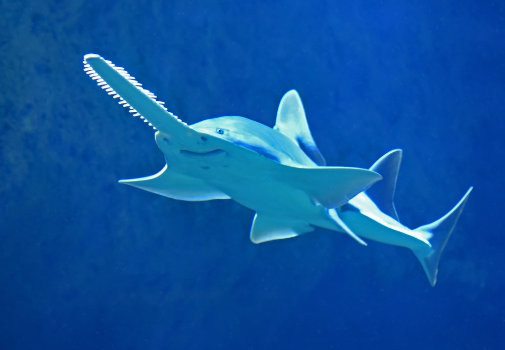

Saw Sharks were created in a lab by the Great Whites during the Shark-Martian War, in an attempt to create the perfect soldier. They succeeded, and the saw sharks charged into the battlefield, decimating the Martian fleet and killing their leader, Fhjnh. After the war was finished, however, the Saw Sharks found it hard fitting in with society, as they were created for battle and nothing else. With nothing to fight, the Saw Sharks had to find a purpose, but were incapable of doing so outside of conflict. Eventually, this lead to the Saw Sharks splitting off from the Shark Collective of Geringa, forming the faction recognized today as the Sovereign Saw Alliance. At first, the SSA were seen as barbaric, and the SCG attempted to exterminate them, their conflict ultimately leading to the infamous Centauri Massacre. Both sides weakened by the battle, a truce was formed between the two, and since then the SCG and SSA have frequently aided each other in times of need.
